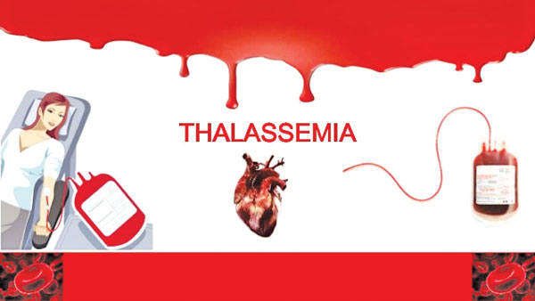

What is Thalassaemia actually?
Thalassaemia is a anaemic blood disorder. A person suffering from this disorder has defective manufacture of hemoglobin and ineffective erythropoiesis ie. manufacture of blood cells in the bone marrow. Thalassaemia is one of the most common inherited disease.This disorder is geographically common in the people of Mediterranean, African and Southeast Asian origin. The cause of the disease is not known other than the fact that it is an inherited disorder.
Thalassaemia can be Beta-Thalassaemia, and Alpha-thalassaemia. These can be further broken into major and minor thalassaemia.
Thalassaemia Major is the severe type where the patient has acute anaemia. The patient has frequent leg ulcers, enlarged spleen and jaundice. Ineffective erythropoiesis causes abnormal skeletal development. The long bones suffer frequent fractures and growth is stunted. Iron deposits in the heart muscles can cause complications and heart failure. Iron deposits in liver lead to dysfunctioning of the liver. The life expectancy of Thalassaemia patients is greatly diminished.

Thalassaemia Minor patients have slight anaemia but lead normal lives. Such patients at times do not even know they are carrying the disease. It is discovered only after a special blood test. Sometimes a Thalassaemia Minor patient discovers the disease after his/her child has Thalassaemia Major. Therefore it is of prime importance to know if you have Thalassaemia Minor when you want to start a family.
The only treatment for Thalassaemia Major is periodic blood transfusions every 3 to 4 weeks. Children with periodic blood transfusions lead quite normal lives upto the age of 20 to 25 years. With each blood transfusion the red cells in the new blood are broken down over a period of 4-5 months. However the iron from the red blood cells remains in the body and can damage the liver, heart and other body organs. If this is not prevented most patients die in their early twenties. Therefore the blood transfusions have to be supplemented by drug treatment to remove the extra iron from the body. The treatment is very successful and most children treated with blood transfusions and drugs lead fairly normal healthy lives. However the treatment is unpleasant and hampers with an active social life.